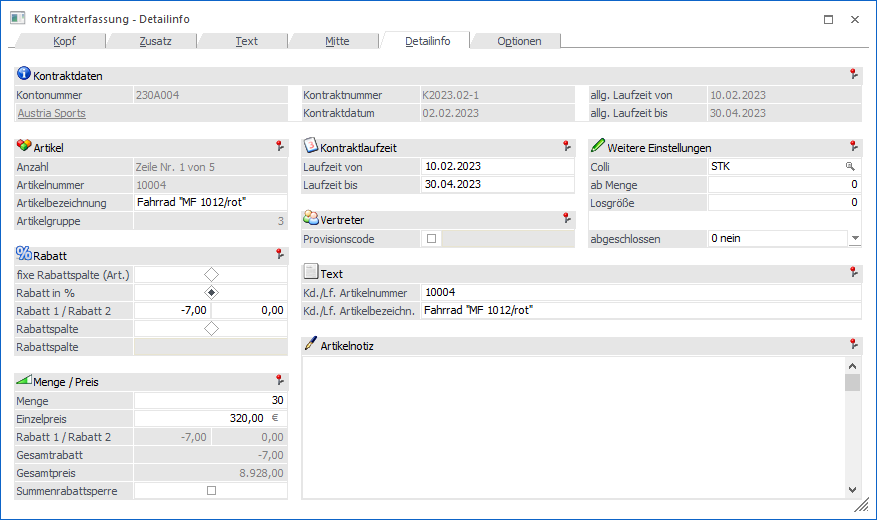
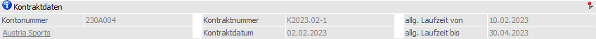
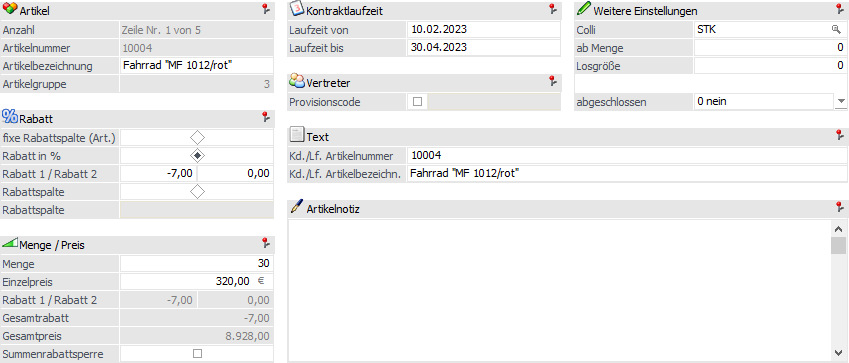
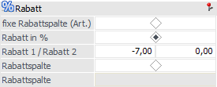
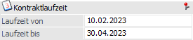
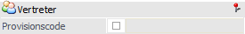
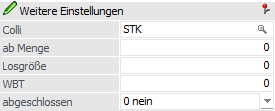

Mit Anwahl des Registers "Detailinfo" wird in die Detailansicht der Kontraktzeile gewechselt.
Hinweis
Weitere Informationen, u.a. zu den Buttons des Programms "Kontrakterfassung", sind dem Kapitel Kontrakterfassung zu entnehmen.

Folgende Eingabefelder, Einstellungen und Information stehen zur Verfügung:
Kontraktdaten

Ø Kontonummer / Gruppennr.
An dieser Stelle wird die Nummer des Hauptkontos (WinLine START - Parameter - FAKT-Parameter - Belege - Allgemein - Option "Hauptkonto für Belege") bzw. der Gruppe des aktuellen Kontrakts angezeigt.
Ø Name
An dieser Stelle wird der Kontoname der Kontonummer bzw. der Gruppe dargestellt und das Fenster Kontoinformation kann direkt geöffnet werden.
Ø Kontraktnummer
An dieser Stelle wird die Kontraktnummer des Kontrakts angezeigt.
Ø Kontraktdatum
Hier wird das Kontraktdatum des Kontrakts dargestellt.
Ø allg. Laufzeit von / bis
In diesen Feldern wird die allgemeine Laufzeit des Kontrakts dargestellt.
Kontraktzeile

Neben den nachfolgenden Einstellungen können diese Felder angepasst werden:
ü Artikelbezeichnung
ü (Kontrakt)Menge
ü Einzelpreis
ü Ersatzartikelnummer / Ersatzartikelbezeichnung
ü Artikelnotiz
Rabatt

Ø Rabattart
An dieser Stelle kann die Art des Rabatts definiert werden, wobei folgende Varianten zur Verfügung stehen:
ü fixe Rabattspalte (Art.)
Wird
diese Option ausgewählt, so wird bei der Rabattfindung in der Belegerfassung auf
die Rabattmatrix zurückgegriffen. Bei der Matrix handelt es sich um eine
Rabattleiste (hinterlegt im Personenkonto), welche unterschiedliche Rabattsätze
(untergliedern in sogenannte Rabattspalten) beinhaltet.
Die für dieses System
benötigte Rabattspalte stammt bei der Einstellung "fixe Rabattspalte (Art.)"
direkt aus dem Artikelstamm (Register "Preise" - Unterregister "Preise" - Feld
"Rabattspalte").
ü Rabatt in %
Pro Kontraktzeile
können 2 Zeilenrabatte hinterlegt werden. Dieser Rabatt übersteuert die
Rabattmatrix (d.h. das Rabattsystem bestehend aus Rabattleiste und
Rabattspalte).
Hinweis
Ein Rabatt muss im Minus erfasst werden, ein Zuschlag hingegen positiv.
ü Rabattspalte
Bei Anwahl dieser
Option wird mit der Rabattmatrix (siehe Feld "fixe Rabattspalte (Art.)")
gearbeitet. In dem Eingabefeld "Rabattspalte" erfolgt anschließend die Angabe
der Rabattspalte (0 bis 9999). Nach dieser Spalte wird wiederum in der (den)
Rabattleiste(n) des Kunden / Lieferanten gesucht um einen passenden Rabatt zu
finden.
Ø Summenrabattsperre
Ist diese Checkbox aktiviert, wird der jeweilige Artikel nicht in die Summenrabattberechnung miteinbezogen.
Kontraktlaufzeit

Ø Laufzeit von / bis
In diesen Feldern kann die Laufzeit des Kontraktes für den Artikel bestimmt werden.
Vertreter

Ø Provisionscode
Nach Aktivieren der Checkbox kann hier ein Provisionscode hinterlegt werden. Dieser übersteuert den im Vertreterstamm hinterlegten Code.
Weitere Einstellungen

Ø Colli
An dieser Stelle wird der Colli des Kontraktartikels dargestellt und kann geändert werden.
Hinweis
Bei Einkaufskontrakten wird das Feld mit dem "Colli Einkauf" und bei Verkaufskontrakten mit dem "Colli Verkauf" des Artikelstamms vorbelegt.
Ø ab Menge
Wird hier eine Menge angegeben, gilt der Kontrakt sowie der angegebene Preis nur bei Abnahme ab dieser Menge. D.h. wird im Belegerfassen die angegebene "ab Menge" nicht erreicht, wird weder die Kontraktmenge dadurch vermindert, noch der im Kontrakt vereinbarte Preis herangezogen.
Ø Losgröße
An dieser Stelle erfolgt die Hinterlegung einer Losgröße, d.h. die Menge die ein- bzw. verkauft wird, muss gleich bzw. ein Vielfaches dieses Wertes sein.
Ø WBT
Die Abkürzung "WBT" steht für "Wiederbeschaffungstage" und definiert die Zeit (in Tagen), die es dauert, bis die Waren im Normalfall eintrifft (ab Bestellung). Diese Information kann bei Einkaufskontrakten hinterlegt werden.
Ø abgeschlossen
Mit Hilfe dieses Felds kann der Kontraktstatus der Zeile angepasst werden. Hierbei ist zu beachten, dass Zeilen mit Status "2 - automatisch" nicht verändert werden können. Folgende Stati steht zur Verfügung:
ü 0 - nein
Es handelt sich um
eine offene Kontraktzeile. Solche Zeilen werden (abhängig von den
FAKT-Parameter) bei der Preisfindung berücksichtigt werden und im Kontrakte abbuchen zur Lieferung
vorgeschlagen.
ü 1 - manuell
Durch Hinterlegung
von "1 - manuell" wird die Kontraktzeile als "abgeschlossen" gekennzeichnet.
Solche Zeilen werden von der WinLine bei einer Preisfindung nicht
berücksichtigt. Bei einer möglichen Kontraktabbuchung wird die Menge automatisch
auf 0 gesetzt.
Achtung
Der Kontraktstatus von manuell abgeschlossenen Kontraktzeilen wird von der WinLine nicht mehr automatisch verändert! Dieses betrifft u.a. eine mögliche Umschlüsselung der FAKT-Parameter (Belege - Kontrakte) oder eine Mengenanpassung innerhalb des Kontrakts.
ü 2 - automatisch
Dieser Status
wird automatisch von der WinLine vergeben, wenn die Kontraktzeile mengenmäßig
erfüllt wurde. Um welche Menge es sich hierbei handeln soll (bestellt, geliefert
oder fakturiert) kann in den FAKT-Parametern (Belege - Kontrakte - Option
"Kontrakt ist erfüllt beim Erreichen der …") definiert werden.
Achtung
Sollte die Übererfüllung von Kontrakten erlaubt sein, so werden Kontraktzeilen nie automatisch abgeschlossen!
Sonderbuttons - Register "Detailinfo"

Ø Suchen
Durch Anklicken des Buttons "Suchen" kann mit Hilfe des Fensters Gehe Zu innerhalb des Kontrakts nach einer Zeilennummer, einer Artikelnummer oder einer Positionsnummer gesucht werden.
Ø VCR-Buttons
Über die so genannten VCR-Buttons kann durch Mausklick zwischen den Kontraktzeilen geblättert werden.
ü  Damit kann
die erste Kontraktzeile angesprochen werden.
Damit kann
die erste Kontraktzeile angesprochen werden.
ü  Damit kann
die vorherige Kontraktzeile angesprochen werden.
Damit kann
die vorherige Kontraktzeile angesprochen werden.
ü  Damit kann
die nächste Kontraktzeile angesprochen werden.
Damit kann
die nächste Kontraktzeile angesprochen werden.
ü  Damit kann
die letzte Kontraktzeile angesprochen werden.
Damit kann
die letzte Kontraktzeile angesprochen werden.
Hinweis
Beim Blättern zwischen den Kontraktzeilen werden Ausprägungen standardmäßig "überblättert", d.h. es wird von einem Hauptartikel zum nächsten geblättert. Sollten auch Ausprägungen berücksichtigt werden, so muss beim Blättern zusätzlich die STRG-Taste gedrückt werden.